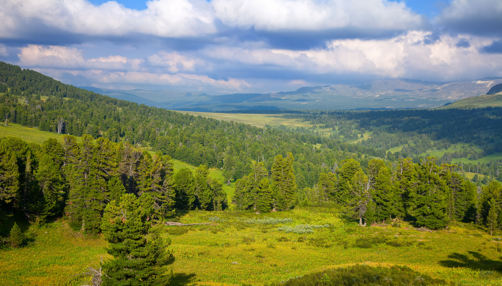
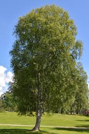
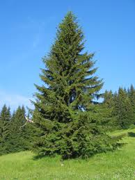
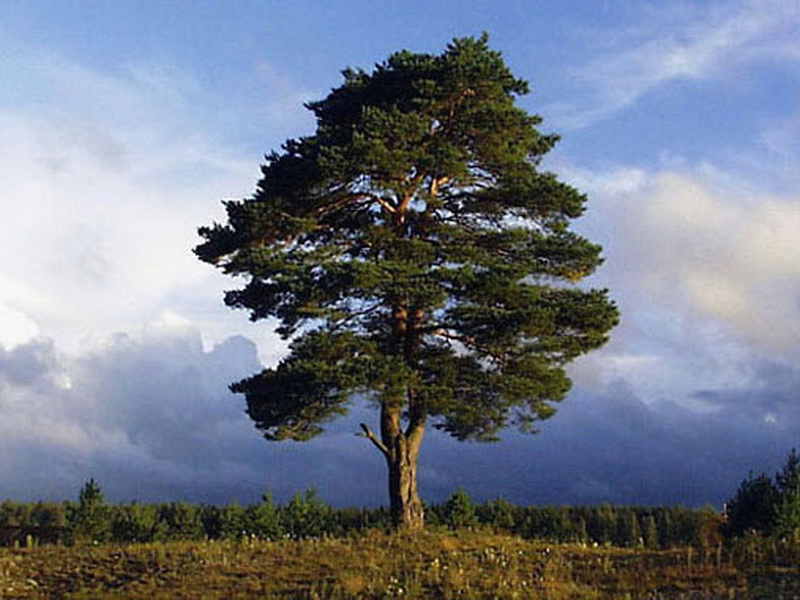
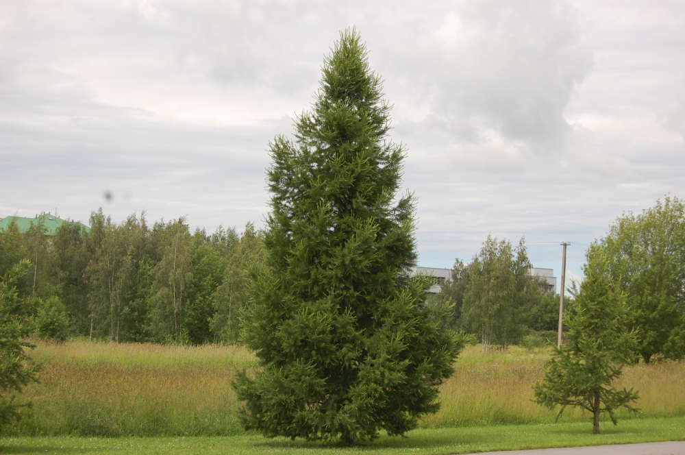
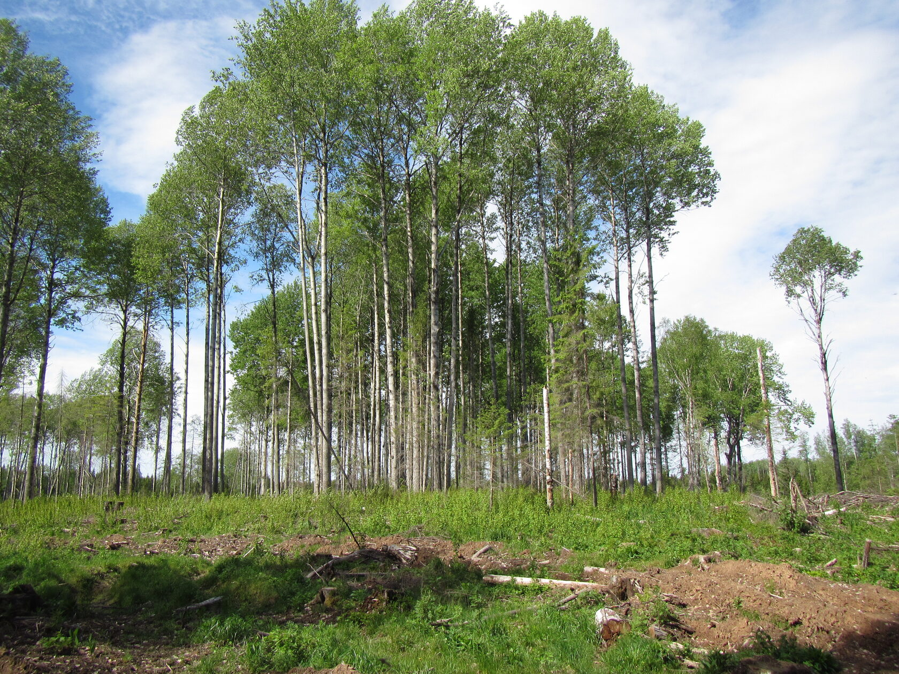
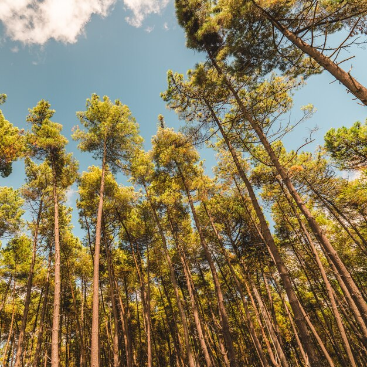

您好，亲爱的顾客！如果您登录到了这个网站上，那么您已经迈出了正确的一步。您对什么感兴趣？您想通过访问这个网站获得什么？喜欢看吗？给自己买点东西？ 获取产品信息？也许您考虑更广泛地与木材加工企业联合生产？或者您想买一批材料用于生产？在这个网站上一切皆有可能。去试试吧！让我们建立互利合作。 而且，我们会向您发送我们生产的最好的产品。

这里您可以找到符合最高质量要求的树种。:每种木材都有其独特的特性。

白桦木质具有良好的物理特性， 木材密度中等，而且具有良好的弹性和韧性。 常用于家具生产， 也用于室内装饰。用油处理桦木板能延长产品寿命，提高强度，增强抗机械损伤能力。经过这种处理的木材更易加工，可用于制作家具的雕刻部件。 在建筑中仅使用胶合板。

这个树种在俄罗斯各地很常见。 云杉的普及性使其成为锯材的基本原料。 制造锯材料产品的的普及。以云杉为原料加工的锯材广泛应用于建筑、房屋修理行业，它用于制作板，砌块， 仿梁，单板，踢脚板和欧式扣板。均匀的纹理赋予木材无可比拟的平整度与光滑度。

它因其优良的木材特性而备受推崇，常用于建造露台。其他人则用它来制作家具，还有一些人用它来做木工活。.它具有浓郁的色彩，看起来更具吸引力，可以用来营造自然的装饰效果.

它是最常见的木材类型之一，被列为珍贵树种，用于生产木材。 它具有独特的特性，其中最重要的是强度高、使用寿命长。.专家强调了落叶松的诸多优点，这些优点决定了落叶松在建筑、家具制造、装饰饰面和其他应用中的受欢迎程度和适用性.

这种木材独特的性质使其可用于制作非常耐用的家居用品或作为建筑材料。 它的木板呈白色，略带绿色或蓝色色调。 细小的黄色斑点模仿了心材的纹理。.房屋内部都铺上了用这种材料制成的木板，这样屋内就会散发出芬芳的气味。.
除了以上所有特性之外，它发出银光的能力也被认为非常重要.

这种树龄可达数百年的古树，寿命可达600年。它能长到75米高。由于喜光，它生长在开阔地带， 并且因其强度和生物抗性优于硬木，且生产成本更低，而被广泛用于木材生产、建筑、装饰和家具制造。 树干表面光滑，更易于加工，且通常缺陷较少.